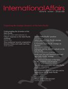

收录于合集

作品简介
【作者】 Kei Koga，南洋理工大学社会科学学院公共政策及全球事务助理教授
【编译】 石雨宸（国政学人编译员，南开大学周恩来政府管理学院）
【校对】 朱曈菲
【审核】 姚寰宇
【排版】 谭誉豪
【来源】 Kei Koga, Japan’s ‘Indo-Pacific’ question: countering China or shaping a new regional order?, International Affairs , Volume 96, Issue 1, January 2020, Pages 49–73.
期刊简介

《国际事务》(International Affairs)，是世界领先的国际关系期刊之一，也是少数几本涵盖整个学科的期刊之一，在国际关系期刊中排名第4位。《国际事务》成立时间已超过90年，以学术严谨、注重实践而闻名。近五年影响因子为3.268，2020年为4.010。
Japan’s ‘Indo-Pacific’ question: countering China or shaping a new regional order？
日本的印太问题：
对抗中国还是塑造新的地区秩序？
Kei Koga
内容提要
安倍政府在2016年首次提出了“自由开放的印度—太平洋”（FOIP）战略，这被认为是为应对中国崛起，继而将印度- 太平洋地区的区域秩序建设纳入国家战略的一种强化努力。本文认为，FOIP的主要目标是 在 基于规则的国际秩序的现有基础上，塑造和巩固印度—太平洋地区的区域秩序。 虽然FOIP最初旨在实现两个目标：在印太地区建立区域秩序和确保日本的防御，但日本逐渐把目标转向前者。这种转变来自于日本的“战略对冲”（tactical hedging）： 基于借助国际联盟建立新的地区秩序存在的不确定性，日本选择首先使用模糊的FOIP概念来试探其他国家的反应，继而调整FOIP的内涵。
文章导读
01
变化中的战略平衡与日本对“中国威胁论”感知的阶段性变化
20世纪90年代，出于对中国战略的担忧，日本对中国威胁的看法逐渐转变，尽管这些行为尚没有对日本构成任何直接威胁。
21世纪的头十年，日本的安全态势受到中美两个方面的地缘政治压力。首先， 中国快速增长的物质能力以及由此不断加速的国防现代化进程 。这让日本感知到了相对战略脆弱性的增加，并更加担心中国未来对日本可能的防御态势。尽管双方的经济联系有所改善，但外交关系却日益紧张。其次， 美国对亚洲承诺的波动和美国的相对衰落。 美国在东亚的零星存在使其看起来对发展区域多边主义并无太大兴趣。但在这十年中，日本仍相信只要现有的国际秩序保持相对稳定，自己有能力保持对中国的战略优势。
2010年之后的几年里，日本迎来了关键的战略转折，这引发了日本国内针对中国的内部制衡和对现有国际秩序的担忧。2009年日本民主党上台执政后出现短暂亲中疏美局面。同时期，中国开始创造一种海上“新常态”，包括增加在东海的非军事船只，建立东海防空识别区(ADIZ)等。这些变化提高了日本的威胁意识，其国防政策也转向了更积极的姿态，2013年安倍政府发布了日本战后历史上第一个国家安全战略，并更新了防卫计划大纲(NDPG)。2016年，中国的“一带一路”倡议已逐渐深入东南亚发展中国家的战略布局，并在印尼高铁基础设施项目上与日本的竞争中胜出，进一步引发了日本对战略竞争的担忧。
02
目标和动机：日本的印度-太平洋概念
日本的FOIP概念的核心目标是在从东非到美洲西部，覆盖整个印度洋和太平洋的地区维持和加强现有的基于规则的国际秩序。 其动机除亚洲均势对比的结构性变化之外，还包括对美国主导的国际秩序的路径依赖，以及由安倍一贯的扩张性战略思维主导的日本战略视野扩张这两个重要内部因素。
长期以来，日本以维护美日同盟的方式从美国主导的国际秩序中获得战略利益，并谋求尽可能长时间地维护该秩序。美国在东亚的存在被认为是亚洲的安全稳定器和经济活动的催化剂，也是日本安全与繁荣的源泉。冷战后美日同盟的不断扩大更加强化了日本关于“维持美国主导的秩序至关重要”的战略假设。当2016年中国的挑战加剧时，日本意识到，比起依赖美国的全球作用，寻找志同道合的国家通过政策协调达成目标来维持秩序将更加持久。
FOIP战略代表了冷战后日本战略视野的延伸，其地缘战略基础可以追溯到21世纪初日本和印度的关系。此外，日本还开始将其与澳大利亚的关系制度化。 在与印、澳关系加强的基础上，基于2006年麻生太郎的“自由与繁荣之弧”概念，安倍提出了一个“更广阔”的亚洲的构想和一个建立在“普世价值”基础上的国际秩序——这一秩序试图将民主国家联系在一起，并规范地约束非民主国家的行为。 安倍提议成立四方安全对话，并在《亚洲的民主安全钻石》一文中阐述了自己的愿景：日美印澳组成一个民主联盟，保护包括印度洋和太平洋在内的海洋公域的航行自由，以阻止中国在海洋领域的单边行动。在巩固日本总体战略方向方面，安倍的个人作用是显著的。
03
日本安全战略中的FOIP：战略对冲
日本的FOIP概念是一个更广泛的战略愿景，与日本的国家安全及其长期战略考虑相关，但不一定与当前最重要的国家利益相关。 问题是日本能否找到一个最佳的战略安排，确定自己在该地区的政策优先事项，并通过各种框架与其他国家协调政策，以进一步为维护现有的国际秩序作出贡献。在实现FOIP的过程中，日本必须争取尽可能多的区域和非区域国家的政治支持和承诺。简而言之， 建立联盟是实现日本FOIP的主要手段。 但是，这需要与日本有不同利益的国家或区域机构合作。如果这些国家不认同日本的战略愿景，就不会配合日本的FOIP理念。 即使他们同意日本的战略愿景，如果密切沟通与理解，也很容易导致该地区的国家将FOIP视为纯粹的反华战略。这样一来，日本将很难获得与中国有密切经济和政治关系的国家的支持。
因此，建立“战略对冲”成为了更合适的选择。 “战略对冲”是指“一种宣示性的政策原则，旨在利用暂时的模糊战略来理解和确定长期战略转变的必要性或可能性”。 传统的“对冲”(hedging)概念介于“制衡”(balancing)和“追随”(bandwagoning)二者之间，通常被视为长期策略，相比之下， 战略对冲本质上是一种用于评估当前政策有效性的短期策略，其目的不是直接影响均势，而是在支持短期现状的同时，通过以下方式确定实现战略目标的最佳方法：（1）发出未来战略变化的信号；（2）判断其他国家对此的反应；（3）必要时根据反应调整其方法。
就FOIP而言，这种灵活性使日本更容易在印太地区培养共同的目标和愿景，从而巩固区域秩序。当然， 随着日本逐步阐明其战略的具体原则、政策和方法，战略对冲可能成为长期国家战略的一部分，否则战略对冲的有效性会下降。 具体表现为： （1）FOIP概念的演变。 2017年日美领导人峰会上FOIP的三项原则被表述为：确立基本价值观；追求经济繁荣与和平稳定承诺，以及与任何国家共享自由开放的印太愿景。此后日本一直强调这一非排他性原则，并有意避免使用“基本价值观”一词以避免其他国家对日本干涉内政的指责。 （2）日本在FOIP体制框架重心上的变化。 最初日本在印太地区的核心集团包括日美澳印四国，虽然四方对话仍在积极推进，但由于新加坡等一些东盟成员国的关切，对四方的强调有所减弱。 （3）FOIP战略在2018年改名为FOIP构想 ，同样考虑到一些东盟国家的担忧，日本政府希望以此避免区域大国与中国竞争的形象，并迫使东南亚国家保持中立立场。日本通过主动和区域伙伴举行对话沟通，成功地塑造了概念框架，使区域各国没有拒绝这一构想。
04
日本FOIP的外交、经济和国防工具
在外交上，日本在四方和东盟之间保持着微妙的平衡。一方面，日本通过将东盟的中心地位纳入FOIP概念缓解东盟关切；另一方面，将四方会议制度化，同时与英法等外部大国合作——这些努力最终都指向构建联盟，维护现有的国际体系，防止次区域被其他大国主导。日本倾向于根据国家的能力、地理位置、战略范围和优先事项在逐个问题上分别建立联盟。经济上，日本在FOIP概念内推进了其优质基础建设伙伴关系(Partnership for Quality Infrastructure)，还通过2018年签署的CPTPP促进该区域的高标准国际贸易框架。美国于2017年退出TPP后，日本主动通过将其转变为太平洋伙伴关系方案来维持这一想法，将其纳入FOIP框架中，并鼓励印尼、菲律宾、韩国等国家加入。在防务领域，基于官方发展援助的活动和基于国防的活动两种能力建设方案分别得到加强。防务省在东盟15个国家开展了能力建设。同时，日本通过官方发展援助保障海上通信线路的海事执法能力建设。
05
主要挑战
首先， 参与FOIP的国家之间存在战略分歧的风险。 日本和美国对FOIP的地理范围有不同的看法，而澳大利亚和印度也未明确界定FOIP的范围。第二， 日本通过战略对冲在FOIP问题上的概念灵活性正在逐渐减少。 美国和东盟对中国的不同立场可能会让日本陷入外交困境。美国目前对中国采取的更强硬立场可能会进一步加剧印太地区的紧张局势，东盟则在传统上对中国更加温和。第三， 日中关系的地位是日本对FOIP概念定义的关键因素， 日本试图在维持和加强现有国际秩序，而不是在遏制中国的背景下构建FOIP，日本对中国BRI的外交策略也构成了战略对冲的一部分。
06
结论：日本在印度-太平洋地区秩序中的未来角色
日本正试图使FOIP成为国际公共物品。但是，尽管日本与其盟友和伙伴之间有共同的印太愿景，其各自实现愿景的方法可能会造成政策差异。日本面临的最大挑战是缩小其伙伴和盟友之间的差距，并找到启动协调政策的最佳时机。如果日本的FOIP概念为规则修改和制定建立了透明的程序，美国和中国这两个大国之间紧张关系将有望得到缓解。
译者评述
正如本文作者所述，日本的印太战略提出并非空穴来风，FOIP的两个目标都延续了日本政府的一贯外交方针，一方面依靠美日同盟来加强日本国防，另一方面继续追求政治大国的地位，试图拉拢地区伙伴来构建全新的区域秩序。安倍内阁自上台以来推行的“俯瞰地球仪外交”是对麻生太郎“价值观外交”“自由与繁荣之弧”的延续。[1]但另一方面，这也延续了日本想要争夺地区秩序主导权的野心。从上世纪末开始，日本谋求成为“正常国家”和“政治大国”的发展目标始终没有改变，在加强国防的短期目标和构建全新区域秩序二者中间，后者看起来更加符合其一贯的野心，即使日本当前的能力尚不能满足这一目标。在日本官方的FOIP文件表述中，明确指出“国际社会繁荣与稳定的关键在于两个大洲和两个大洋结合创造出的活力”，这一表述将亚洲和非洲、太平洋和印度洋全部囊括其中，并将这些内容作为一个综合概念来拓宽日本外交政策的视野。[2]这足以说明日本构建全新区域秩序的更长远目标。
鉴于日本尚且有限的资源和能力，实现FOIP不得不依靠和其他盟友和伙伴的政策协调，这也意味着，政策协调的结果可能只是最低限度的同意，而非所有成员都满意的结果。母庸置疑，美国和中国仍然是所有成员的政策协调中重要的影响因素，中美战略竞争的加剧为FOIP带来了更多不确定性。[3]与中国竞争和构建日本主导的区域秩序在未来可能依旧是FOIP在亚洲的主要目标，但特朗普政府在亚太地区的漫不经心对日本的FOIP愿景可能是重大打击。
本文作者使用“战略对冲”来描述FOIP概念的模糊性和不断变化，但这一策略也存在不可避免地问题。首先，战略对冲在短期内的确可以帮助日本试探各个伙伴的反应，但随着合作的不断发展，战略对冲的空间必然被不断压缩，各成员的参与态度也会逐渐清晰，如何实现FOIP的长期合作与发展愿景可能还需要适时转换策略并使用合适的外交、经济与国防工具。第二，虽然日本政府官方对FOIP概念的表述不断变化，但本质并没有发生变化，依旧是其“价值观外交”的延续，与中国的竞争仍旧是FOIP的主要目标之一。因此，这种概念模糊可能并非真正的政策协调，而可能只是为了缓和周边环境与吸引澳大利亚、印度和东盟成员国参与的权宜之计。第三，战略对冲到底是有意为之还是被动反应也存在疑问。日本的战略扩张野心和本国的资源能力尚不对等，短期内其中的差距也难以弥补，FOIP在提出之时就存在空有设想但实施方式不明确的问题，采取战略对冲就成为不得已为之的方式，在短期内通过对话沟通和不断协调来获得区域成员的认同与合法性可能是在日本尚没有对FOIP做出明确政策安排情况下的缓兵之计。
参考资料：
[1] 吴怀中：《安倍政府印太战略及中国的应对》，《现代国际关系》2018年第01期，第13-21页，第62-63页。
[2] Ministry of Foreign Affairs of Japan: What is Free and Open Indo-Pacific?, May 20, 2020, https://www.mofa.go.jp/policy/page25e_000278.html (Accessed July 17, 2020)
[3] H. D. P. Envall: The Quadrilateral Security Dialogue: Towards an Indo- Pacific Order?, September 09,2019,https://www.rsis.edu.sg/rsis- publication/idss/the-quadrilateral-security-dialogue-towards-an-indo-pacific- order/, (Accessed July 17, 2020）
文章观点不代表本平台观点，本平台评译分享的文章均出于专业学习之用, 不以任何盈利为目的，内容主要呈现对原文的介绍，原文内容请通过各高校购买的数据库自行下载


好好学习，天天“在看”
国政学人
支持学术公益与知识传播
微信扫一扫赞赏作者 __赞赏
已喜欢，对作者说句悄悄话
取消 __
发送给作者
发送
最多40字，当前共字
上一页 1/3 下一页
长按二维码向我转账
支持学术公益与知识传播
受苹果公司新规定影响，微信 iOS 版的赞赏功能被关闭，可通过二维码转账支持公众号。